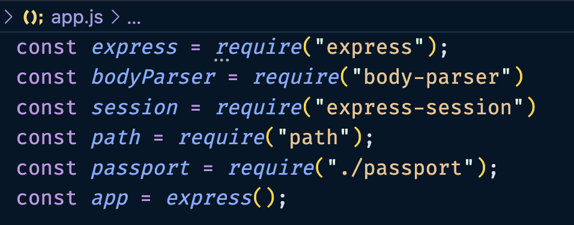
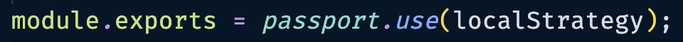

Strategies
Set Up A Database
For the purpose of this project we will be creating a fake db.
Advanced Users
You can read documentation on the implementation of a real database, such as MySQL or MongoDB. You can swap out the fake database for a real one by following the documentation for those languages and technologies.
1.Create A File
This file will be named fake-db.js.
Inside this file we have created an array containing objects. Each object will contain a username and password.
2.Create a Variable
Inside the fake-db.js you will create a variable.
This will contain the fake database of users and passwords that you can use to access the program.
Fake Database
const users = [
{
username: "Gary",
password: "gg"
},
{
username: "Brett",
password: "bb"
}
]
3.Create & Export Functions
-
For getting the user by the username or password.
-
For finding the user by the username.
Both of these functions will return the entire object(username and password) associated with the requested user.
Example:
Add this block of code, containing the first function, below the users.
const getUserByUsername = (username) => {
let user;
users.forEach(u => {
if (u.username == username) {
user = u;
}
})
return user;
}
This function allows us to access the username for each user.
Example:
Paste this function below the first function.
const getUserByUsernameAndPassword = (username, password) => {
let user = false;
users.forEach(u => {
if (u.username == username) {
if (u.password == password) {
user = u;
}
}
})
return user;
}
External Databases
If using another database you would code the functions differently but the logic would remain the same.
4.Export Functions
This will allow you to access your database by importing the functions that query the database.
Export The Functions
Add this block to the bottom of your fake-db.js.
module.exports = {
getUserByUsername,
getUserByUsernameAndPassword
}
This is how we export the functions to be used in our other files. You will need to import these functions into the files where they are used.
Setting Up Passport.js
In this section you will be setting up passport so that you can use it in your app to authenticate users.
1.Create A File Named Passport.js
Create this file in the project folder. In this file you will be configuring passport for usage.
2.Import Libraries & Files
The libraries you will bring in will be:
- Passport library
- Local passport strategy
- Functions you made for querying db in fake-db.js.
In app.js, you need to import all the files and libraries that you will be using.
Importing Files & Libraries
Paste these at the top of your app.js.
const express = require("express");
const bodyParser = require("body-parser")
const session = require("express-session")
const path = require("path");
const passport = require("./passport");
const app = express();
Screenshot: App.js Imports
This is how the top of your app.js file should look.

3.Create A Local-Strategy Variable
To configure local strategy for authentication, you must specify the authentication criteria and define the authorization process.
- This involves passing the username and password through a function and using the result to query a mock database.
Example:
code example
The function will return a value that is either the user or undefined. This is used as the condition inside an if-statement.
If the value is a user, you run the function done(null, user). Null indicates that there are no errors, and user tells done to run passport's login function.
If the value is false, you run the function done(null, false, {message: ""}). Null indicates that there are no errors, and false tells done 'NOT' to run passport's login function. Instead, it sends the error message to the console.
If the passport's login function is run, passport will run the serializeUser function.
4.Create serializeUser Function
This function stores the identifying logged in user id which in this case we have used username. This information is stored inside the sessions.
Function: serializeUser()
Paste this into your passport.js below localStrategy().
passport.serializeUser(function (user, done) {
done(null, user.username);
});
5.Create deserializeUser Function
In this function the information that the done function inside the serialize function takes, which is the user's username, is used in deserializeUser. We use a function(name of function) from our fake-db.js to query for the user based off of their username. The returned value from that function is stored inside a variable.
Function: deserializeUser()
Paste this code below your serializeUser() function.
passport.deserializeUser(function (username, done) {
let user = getUserByUsername(username);
if (user) {
done(null, user);
} else {
done({ message: "User not found" }, null);
}
});
If the variable contains an object(username, password), we run done(null, user). This done function puts the user object inside req.user, which can be accessed for a future usage.
If the variable contains undefined, we run done({message: ""}, null), where the message is sent to the servers console(VSCode console) to tell the user that the function failed to retrieve a matching user with the requested username.
Export Local Login
You need to tell passport that you want to use the local strategy and that you want to export passport so that it can be used in app.js.
1.Add Code To Export Module
Add a line of code to the bottom of passport.js.
Export Local Strategy
module.exports = passport.use(localStrategy);
Export Local Strategy
This is what the bottom of your passport.js should look like.

By running this you modify passport to use your local login strategy. As well you can now export your modified passport to app.js.
Conclusion
On this page we learned about setting up the local strategy for passport.js. Move on to the next page to learn about implementing passport.js.
Congratulations
You have successfully set up the local strategy, database, and functions to authenticate users.